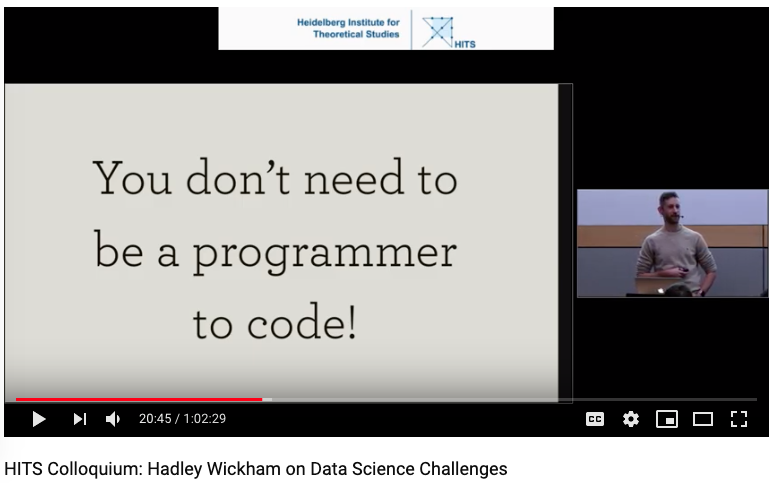
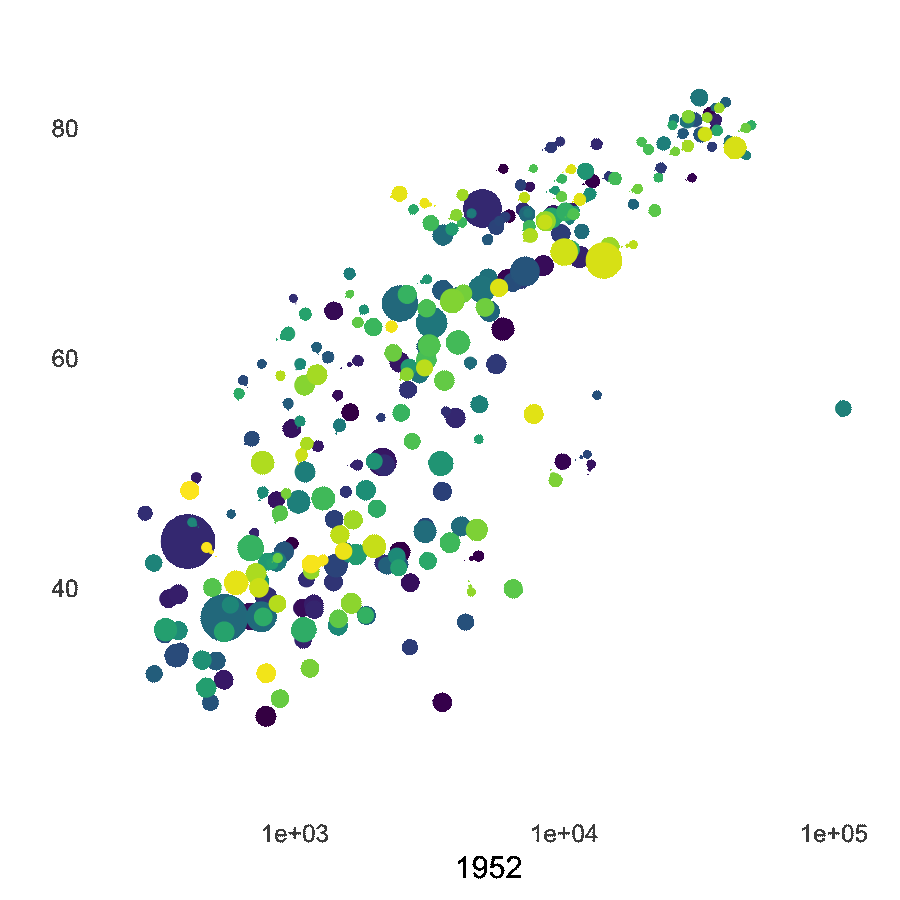

Andres Karjus
University of Edinburgh
andreskarjus.github.io
(instead of clicking a bunch of buttons every time)
Programming sets you free: you can do pretty much anything.
Free to explore your data any way you need - not limited by the number of basic plots (cf. Excel)
Free to present your data any way you want
Free to use any style, color and form
Free to combine or overlay any plot with any other plot
Plots created using code remain reproducible
The same code works a week, a month, a year, and likely a decade later
Easy to retain uniform style throughout your paper/thesis/book/career
No more clicking through endless menus and buttons
Time is money!
But but I'm not a programmer!

R is free and widely used
Easy to learn
Massively extendable with packages
(e.g. to make slides like these)
RStudio makes R convenient to use
Very good for stats & data science.
Enough talk. Let's make some plots.

Use a spacebar or arrow keys to navigate